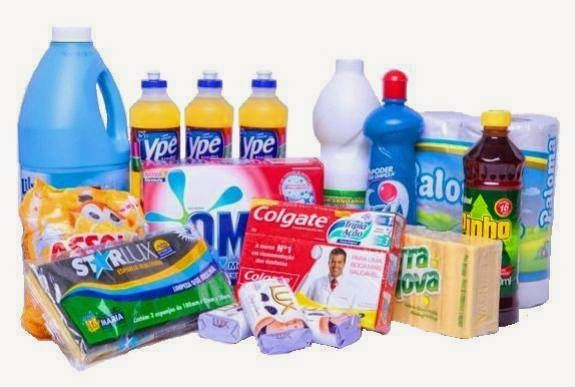
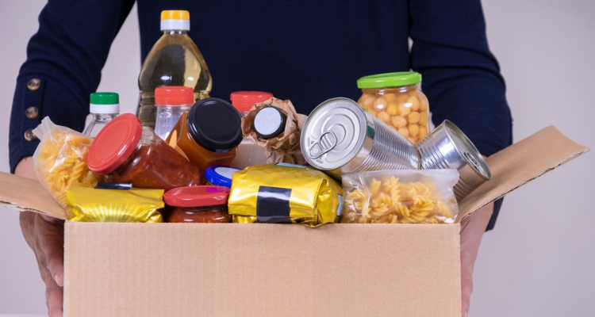

A Comunidade Católica São José serve refeições, doa roupas e acolhe quem mais precisa. Sua contribuição faz essa missão continuar.
Todo dia, nossa equipe de voluntários prepara marmitas e distribui refeições quentes para pessoas em situação de vulnerabilidade social em Cornélio Procópio.
Acreditamos que alimentar o corpo é o primeiro passo para restaurar a dignidade. Com sua ajuda, podemos melhorar cada vez mais.
Ajude essa causaMarmitas diárias para moradores em situação de rua e famílias carentes
Recebemos e redistribuímos roupas e agasalhos, calçados e roupas em boas condições (preferencialmente de homens)
Kits de higiene pessoal e limpeza para pessoas em situação de rua
Nova sede em construção para ampliar o atendimento à comunidade
Conheça o trabalho que é feito todos os dias com dedicação e amor.
Marmitas feitas com amor para quem precisa
Voluntários dedicados na cozinha todos os dias
Bazar solidário — compre e ajude nossa missão
Fé em ação — venha fazer parte dessa história
Toda contribuição, grande ou pequena, alimenta uma família e fortalece nossa missão.
Transferência rápida e segura via Pix. Qualquer valor ajuda.
Traga pessoalmente na sede. Recebemos com muito carinho!


Estamos construindo uma nova sede para ampliar nosso atendimento.
Cada tijolo representa uma família que poderemos ajudar. Contribua via Pix usando a mesma chave e coloque no campo de descrição: "Obra".
Contribuir com a obraParticipe e ajude a nossa comunidade a crescer.
📅 Sábado, 13 de junho · R$ 45,00
Pizzas saborosas para você e sua família. Toda renda vai para a construção da nova sede.
📅 Toda sexta-feira · 19h · 19:30h · 20h
Momento de oração, louvor e partilha em comunidade. Todos são bem-vindos.
📅 1x ao mês
Momento de oração, louvor na construção da sede. Todos são bem-vindos. Endereço: Rua Paulo Costa Pereira, 500 - Jardim Veneza.
📅 Toda terça-feira · 2x ao mês
Momento de adoração ao santíssimo. Apenas para HOMENS.
📅 Sábado, 2x ao mês
Roupas, sapatos e acessórios a preços simbólicos. Venha conferir!
📅 Todos os dias
Distribuição de refeições para pessoas em situação de vulnerabilidade. Venha ajudar!
Nosso projeto de alimentação funciona graças a pessoas que doam seu tempo e coração. Você pode ajudar cozinhando, montando marmitas, distribuindo alimentos ou apoiando a administração do projeto.
Não é preciso experiência — só vontade de servir. Junte-se a mais de 38 voluntários ativos que já fazem parte da nossa missão.
"Comecei a fazer a janta dos irmãos há 10 anos e hoje não consigo mais me ver sem ir, pois é muito gratificante."
— Marli, voluntária desde 2016Rua Barão do Rio Branco, 900 — Cornélio Procópio, PR
A Comunidade Católica São José é uma organização sem fins lucrativos dedicada a servir pessoas em situação de vulnerabilidade social em Cornélio Procópio.
Nosso trabalho é fundamentado no amor cristão: alimentamos, acolhemos e acompanhamos quem mais precisa, sempre buscando restaurar a dignidade e oferecer esperança.
Através de projetos de alimentação, distribuição de doações, eventos solidários e voluntariado, construímos uma rede de cuidado que transforma vidas todos os dias.